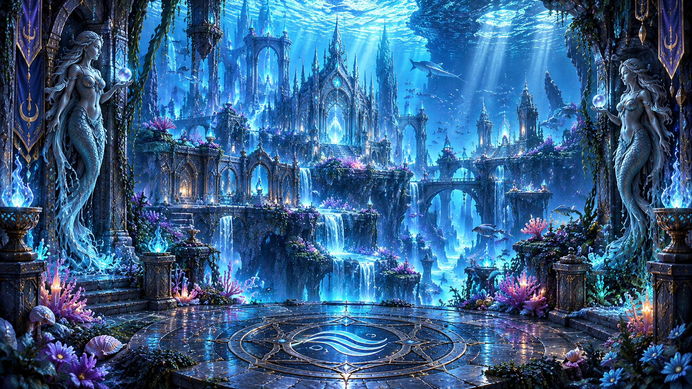
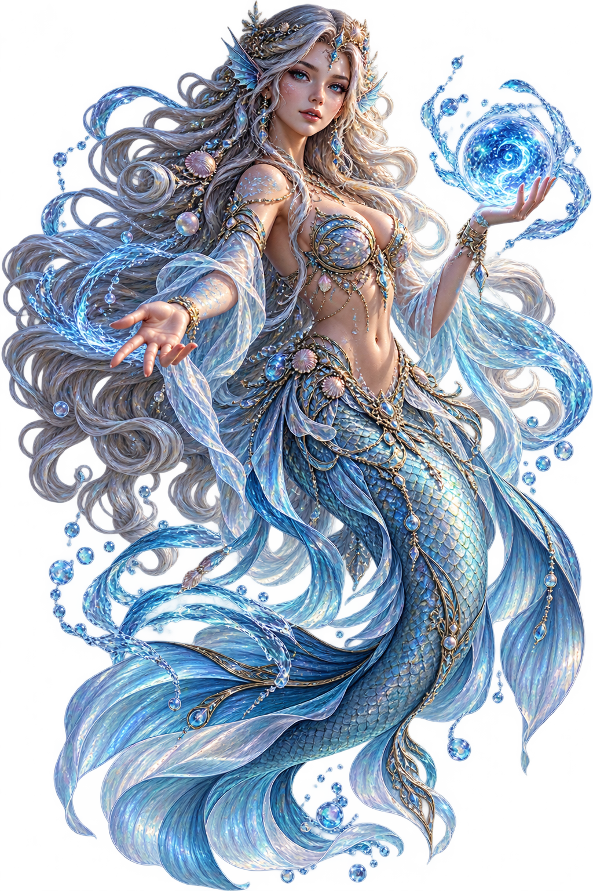
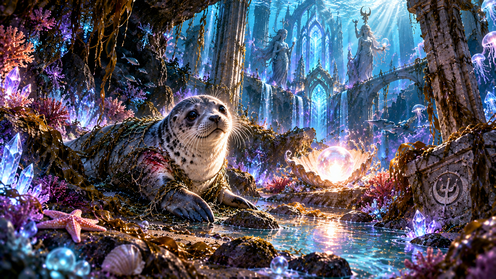
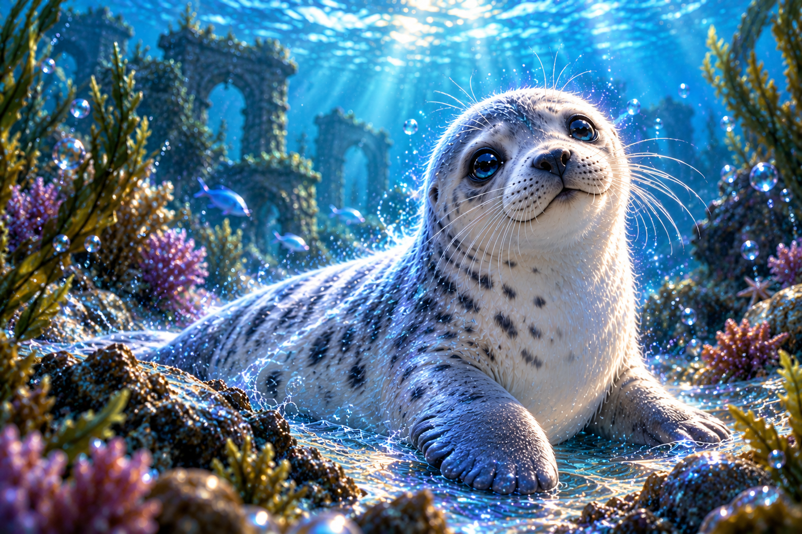

CHAPTER V – THE TRIAL OF WATER
Sirena's Realm
The Drowning Light


Sirena, Guardian of Water
"For three thousand years, these waters have guarded the memories of Aquillia. But something has disturbed their peace."
"A young creature has become trapped among the ancient ruins. I can feel her light growing weaker."
"Her name is Neriel. Will you help me save her?"
The Trapped Light

You follow Sirena through the ancient coral gardens. Beneath a broken stone arch, a faint silver glow flickers in the darkness.
A young seal lies trapped beneath an abandoned fishing net. Her breathing is weak, and the magical light surrounding her is slowly fading.
Neriel looks up at you with frightened eyes. She tries to move, but the tangled ropes hold her still.
The Three Knots
Three enchanted knots hold the ancient net together. Each carries a symbol of the sea.
"The moon guides the waves, the waves awaken the pearl, and the pearl brings light to the darkness."
Neriel is finally free, but her injuries remain. A gentle healing potion may restore her fading light.
The Blessing of Water

As Neriel's wounds disappear, the ancient waters begin to shimmer with silver-blue light.
Sirena approaches, her eyes filled with warmth.
"Aquillia believed that true magic was never measured by power alone, but by the kindness we show to those who cannot protect themselves."
"You have shown the compassion that once united the founders and their guardians. The waters shall remember your kindness."
You have earned the Blessing of Water!

Tear of the Tides
Neriel swims towards you and gently places a shimmering crystal within an ancient seashell. A gift from the heart of the ocean.